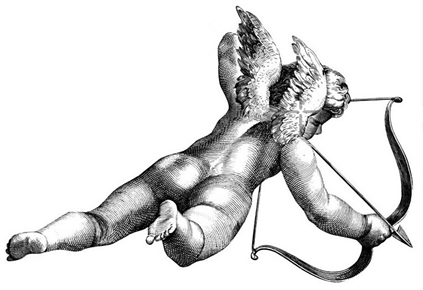

-
CUPIDE
ON
(la créance)
"Dans la plupart des amours, il y en a un qui joue et l'autre qui est joué ; Cupidon est avant tout un petit régisseur de théâtre." Friedrich NIETZSCHE
Quand on loue une voiture ou un appartement, on dépose un chèque de caution que l'on récupère à la restitution si tout s'est bien déroulé. A l'identique et afin de concrétiser, lors d'un début de relation sentimentale, symboliquement on verse en l'autre une part de notre narcissisme, cette fixation affective structurante à soi-même. Cette part d'amour propre déposée et qui est accessible dès lors que le dépositaire reste à proxémique. Ce narcissisme qui est gonflé à bloc lors de la stratégie d'accession à l'autre pendant la rencontre et ceci par les deux protagonistes. On se donne les meilleures chances, on se montre sous notre meilleur angle.
Les années filent dans ce dualisme sentimental ou l'on ne fonctionne qu'avec une part de notre narcissisme symbolique, fonctionnement relativement efficient car l'autre est présent. Preuve en est de l'importance de l'autre dans les points de vues, les décisions, on s'efforce même parfois d'être à l'unisson pour ne pas chanceler par lacune d'assise narcissique individuelle. Ne dit-on pas d'ailleurs notre moitié, notre mie en surnommant tendrement notre aimant(e)? Nous sommes donc bien la moitié d'un tout, le couple.
Et quand le couple "bat de l'aile" (une seule) c'est que possiblement l'autre a déjà récupéré sa caution narcissique (la deuxième aile) et l'a déjà réinvestie possiblement ailleurs. Le laissant dira généralement qu'il lui faut du temps pour se reconstruire. Se reconstruire, c'est retrouver son narcissisme déposé et non restitué. Classiquement, le largué n'arrive pas à réinvestir une nouvelle relation sérieuse par manque d'assise, il parlera de blessure sentimentale. Il y aura des essais, des rencontres brèves cumulatives afin dans l'absolu de remplir sa jauge d'amour propre. Mais chaque nouvelle expérience est un nouvel espace de dépôt de caution, même faible, qu'on ne récupère pas forcément ou que partiellement.
Les années filent dans ce dualisme sentimental ou l'on ne fonctionne qu'avec une part de notre narcissisme symbolique, fonctionnement relativement efficient car l'autre est présent. Preuve en est de l'importance de l'autre dans les points de vues, les décisions, on s'efforce même parfois d'être à l'unisson pour ne pas chanceler par lacune d'assise narcissique individuelle. Ne dit-on pas d'ailleurs notre moitié, notre mie en surnommant tendrement notre aimant(e)? Nous sommes donc bien la moitié d'un tout, le couple.
Et quand le couple "bat de l'aile" (une seule) c'est que possiblement l'autre a déjà récupéré sa caution narcissique (la deuxième aile) et l'a déjà réinvestie possiblement ailleurs. Le laissant dira généralement qu'il lui faut du temps pour se reconstruire. Se reconstruire, c'est retrouver son narcissisme déposé et non restitué. Classiquement, le largué n'arrive pas à réinvestir une nouvelle relation sérieuse par manque d'assise, il parlera de blessure sentimentale. Il y aura des essais, des rencontres brèves cumulatives afin dans l'absolu de remplir sa jauge d'amour propre. Mais chaque nouvelle expérience est un nouvel espace de dépôt de caution, même faible, qu'on ne récupère pas forcément ou que partiellement.

Alors, nous appauvrissant progressivement, on peut même envisager de retourner voir son "ex". Ce retour peut aussi être symbolique, ne pas tourner volontairement la page de peur de ne jamais remettre la main sur le chèque d'arrhes. Après tout, c'est le possesseur du chèque de caution de base qui a généré un endettement ! Bien évidement, ce chèque de caution métaphorique influence la fixité de croyances limitantes dont le rôle n'est que freinateur. Ce schéma peut égalemment se retrouver dans le veuvage, lorsqu'un des protagonistes part sans intention.
Pour éviter tout cela, restez vous même dans la relation, acceptez pleinement l'autre dans vos différences, n'essayez aucunement de le ou la convertir à votre vision du monde. Prônez davantage l'expression de l'authenticité, de la singularité chez chacun, quitte à remettre en considération la maxime latine "similis simili gaudet", "qui se ressemble s'assemble".
Pour éviter tout cela, restez vous même dans la relation, acceptez pleinement l'autre dans vos différences, n'essayez aucunement de le ou la convertir à votre vision du monde. Prônez davantage l'expression de l'authenticité, de la singularité chez chacun, quitte à remettre en considération la maxime latine "similis simili gaudet", "qui se ressemble s'assemble".
EN RELATION
ACCRO AFFECTIF
AUTHENTICITE
(toxic)
CONVOITISE
(jalousie)
COUPLE
NARCISSE
(dés-amour)